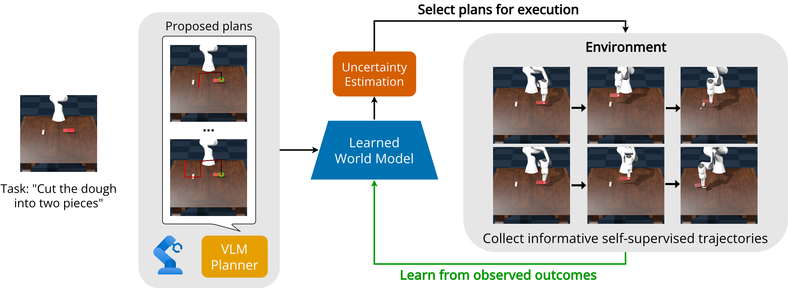
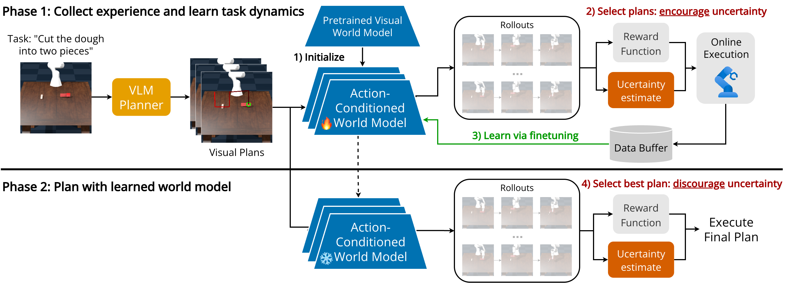
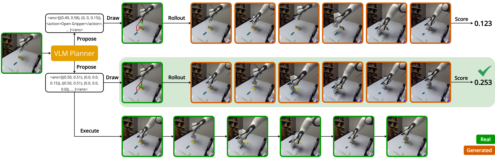
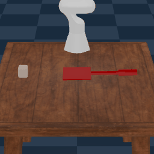
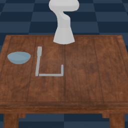
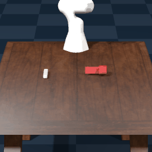
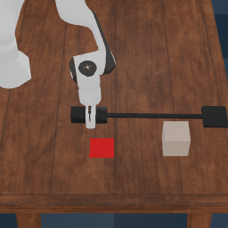

Uncertainty-Guided Adaptation of World Models
from VLM Plans for Robotic Tool Use

Abstract
Teaching robots to use previously unseen tools requires both high-level semantic reasoning about how a tool should be used and low-level physical reasoning about how contact-rich interactions will unfold. Vision-language model planners provide strong semantic priors for proposing tool-use strategies, while visual world models can evaluate candidate actions through imagined rollouts. However, existing approaches often improve the planner, policy, or search procedure while treating the world model as fixed, which can be unreliable for novel tools with unfamiliar dynamics. We propose a self-supervised framework for adapting an action-conditioned visual world model to a new tool-use task using VLM-proposed plans and their executed outcomes. At training time, the VLM proposes candidate gripper-centric plans, and we select informative trajectories for execution by choosing plans with both high predicted reward and high model uncertainty. These executions, including both successes and failures, provide interaction data for finetuning the world model. At test time, the adapted world model selects the VLM-proposed plan with high predicted reward and low estimated uncertainty. We show that this self-supervised framework enables success on unseen tool-use manipulation tasks, improves over ablations without uncertainty-guided selection, and outperforms end-to-end policy learning baselines.
Method Overview

World Model Rollout Selection

Results
Successes
These videos show the successful outcomes of the selected VLM plans at test time.



Outcomes at Training Time
Our framework is able to learn from both successful and unsuccessful outcomes of executing VLM plans selected at training time. These outcomes are used to improve the world model so that it can select the best plan at test time. These videos show examples of failed or suboptimal outcomes from training time.
Ball in Ring (10x)
Cut Dough (5x)
Reach (10x)
Flatten Dough
Lift Bowl
Cut Dough (Simulation)
Reach (Simulation)

